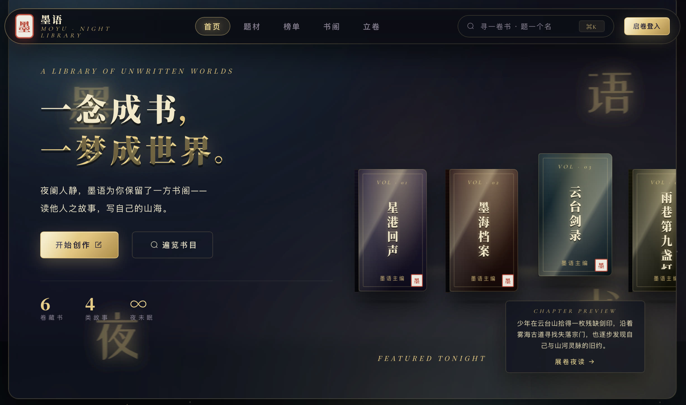
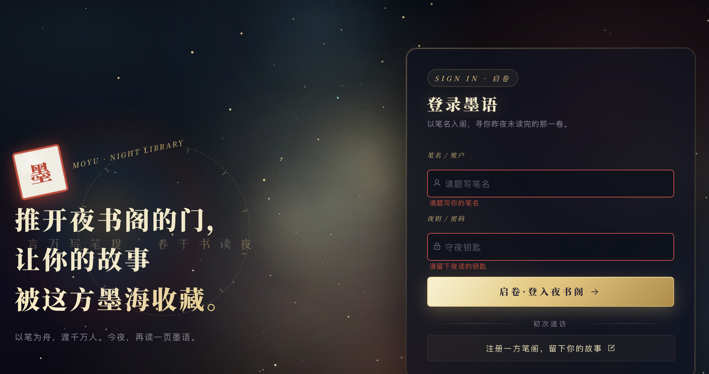
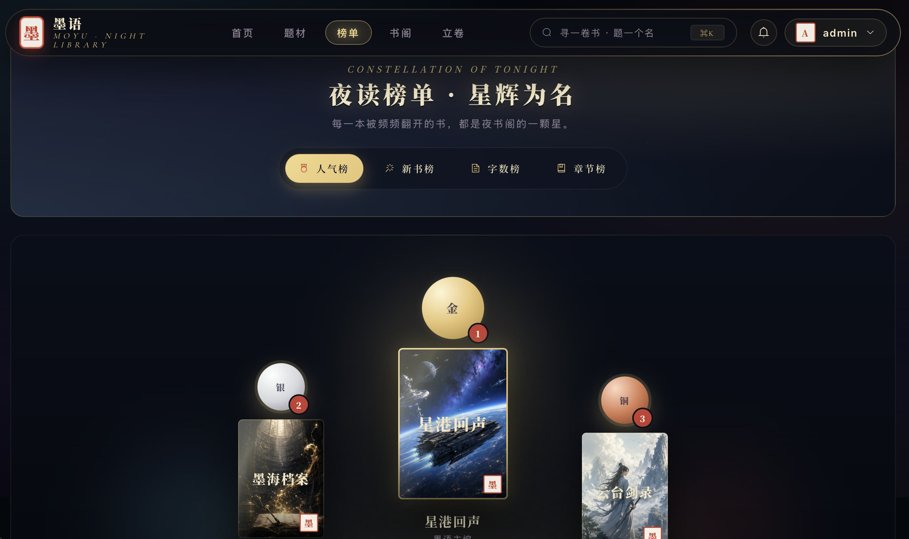

以“夜书阁”为视觉主题的网络文学全栈平台，把读者发现与阅读、作者创作投稿、内容审核治理连接成一条完整业务链路。

墨语不是单一的阅读页面，而是一套覆盖内容生产、平台治理与读者消费的网络文学业务系统。读者端和作者工作台由 novel-app 承载，运营管理端由 ruoyi-ui 提供，二者共享 Spring Boot API 与统一权限体系。
平台围绕书籍、章节、草稿、书架、订阅、评论、评分、举报、审核和通知等核心对象组织功能，使每一次内容变化都能进入后续的审核、分发和反馈流程。
读者可以通过推荐、题材、榜单、搜索和历史记录发现内容，再进入书籍详情与阅读器。书架、订阅、阅读进度、阅读历史和通知共同维持跨会话的连续阅读体验；评分、点赞、评论和举报则把反馈带回平台治理流程。

作者侧覆盖资料、作品、封面、章节和草稿管理，并支持 TXT、DOCX 章节导入。编辑器包含自动保存、版本历史与敏感内容预览，降低长篇创作时因页面中断、误操作或内容规则不明确带来的损失。
书籍与章节提交后进入审核状态，作者可以持续查看处理结果和通知；被退回的内容保留原因与修改入口，使创作和平台规则之间形成明确反馈。
治理端提供书籍与章节审核、批量处理、驳回原因模板、敏感词命中上下文、风险排序和运营看板。敏感内容采用提醒加人工复核策略，而不是简单自动拒绝；词库、白名单、命中记录和审核快照为决策提供依据。
举报流程支持聚合查看、隐藏与恢复内容、结果通知及操作留痕，让读者反馈能够进入可审计的治理闭环。
界面以深色夜景、暖金色书页和实体书封为核心视觉信号，同时把搜索、题材导航、书架和创作入口放在稳定位置。榜单采用星座式陈列强化名次与书籍的视觉关联，但不改变常规筛选和列表操作。

系统沿用 RuoYi 的模块边界，把读者与作者体验、运营管理、领域业务、认证授权和基础设施分层。MySQL 保存业务数据，Redis 承担会话与热点状态，JWT 连接前后端身份；Docker Compose 用于组合后端、数据库与前端运行环境。